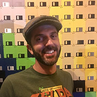

About Me

I was born and raised in Sourthern California, so I always knew I would end up living in a place like San Diego. I moved here over 4 years ago and never looked back.
I have worked in a regular office jobs for the past 10 years and decided I needed a change. The need to get creative and understand the technology I use daily became too strong to ignore. The more I looked into coding as a hobby, the more fun (and frustrating) it became. After many attempts to teach myself coding, I decided to enroll in a coding bootcamp. Although I am new to coding, I am excited about all of the opportunities it presents!